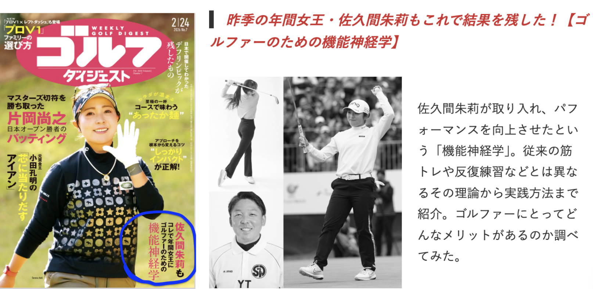

⚠️ こんな「ショートパットの罠」に陥っていませんか？
- パターを構えた瞬間、自分がどこを向いているか分からなくなる
- 1m〜1.5mのパットを残すと、心臓がドキドキして手が動かなくなる
- 上りか下りか、距離感が全くつかめず大オーバーや大ショートをしてしまう
- ショットは良いのに、グリーン上のミスでスコアを崩している
ドライバーの爽快なショットも、1mのパットミスも、スコア上は同じ「1打」。
スコアアップের最大の壁は、間違いなくグリーン上にあります。
💡 なぜ、ショートパットで「向き」や「距離感」が狂うのか？
多くのゴルファーがショートパットを苦手とする理由。それは、あなたのセンスや練習不足のせいではありません。
原因は「脳の錯覚」と「神経伝達のエラー」にあります。
「どこを向いているか分からない」「距離感がつかめない」というのは、目で見たターゲット（カップ）の情報が、正しく脳で処理されず、筋肉へ正確な指令（ストローク）として伝わっていない状態です。
プレッシャーがかかれば、この神経伝達はさらに乱れ、手が動かなくなったり、パンチが入ったりしてしまいます。
🔥 その課題を克服するための「正しい練習」をしていますか？
ラウンド前の練習グリーンで、カップに向かって何となくボールを3球転がすだけ…。あるいは「もっと真っ直ぐ引いて、真っ直ぐ出す」という根性論や感覚論の練習…。
そんな「その場しのぎの練習」になっていませんか？
残念ながら、ただボールを打つだけの練習では、脳の錯覚や神経のエラーは修正されません。「なぜ外れたのか」という科学的・身体的なフィードバックがないまま回数を重ねても、間違った動き（脳のバグ）を体に深く刻み込ませるだけなのです。
👤 なぜ、私があなたのショートパットを劇的に変えられるのか？
「ゴルフのコーチではないのに、なぜパッティングを教えられるのか？」
そう思われるかもしれません。
実は、ゴルフのパッティング、バスケットボールのフリースロー、ダーツ。これらはすべて「静止した状態から、自らのタイミングで特定のターゲットを狙う」という共通のメカニズムを持った競技です。私はこれまで、これらのターゲットスポーツにおける人間の動作と精度を、独自の科学的アプローチで研究してきました。
🏆 『週刊ゴルフダイジェスト』にも掲載されたメソッド！

私が提唱する「機能神経学」は、ゴルフ界からも高い注目を集め、『週刊ゴルフダイジェスト』にて特集記事として掲載されました。
他競技の研究と機能神経学から導き出したのが、【Neuro Dynamics method（ニューロダイナミクスメソッド）】を用いたアプローチです。
従来のゴルフ指導のような「形」や「感覚」を押し付けるレッスンではありません。
- 視覚情報がどのように脳で処理され、空間認知（向き・距離感）を生むのか？
- プレッシャー下でも、脳から筋肉への神経伝達（Dynamics）をいかにスムーズに行うか？
身体の構造と機能神経学の繋がり（Neuro）という科学的な根拠に基づき、あなたの脳の錯覚を取り除き、自動的かつ正確にストロークできる身体の連動性を作り上げます。
だからこそ、長年染み付いたショートパットのイップスや苦手意識を、根本から解決できるのです。
🏌️♂️ プログラムのご案内
本プログラムでは、マンツーマンであなたのパッティング動作と視覚・神経の連動を徹底的に分析し、プレッシャーに負けない「一生モノのストローク」を構築します。
【トレーニング内容】
- 空間認知と視覚のチェック （なぜ「どこを向いているか分からない」のかを解明）
- Neuro Dynamicsに基づくセットアップ構築 （脳が錯覚を起こさない姿勢と目の使い方）
- 神経伝達の最適化 （手打ちを防ぎ、距離感を自動化する身体の連動）
- プレッシャーを無効化するルーティン作り
【料金・場所】
⏳ 毎月の新規受付枠についてのご案内
現在、多くのプロアスリートや選手のサポートを中心に行っているため、パーソナルトレーニング枠には限りがございます。
一人ひとりへの質の高いマンツーマン指導を維持するため、毎月の新規受付は【限定3名様】とさせていただいております。定員に達し次第、その月の受付は締め切らせていただきますので、本気でパッティングを改善したい方はお早めにお申し込みください。
※定員に達した場合は、次月以降のご案内となります。
📩 今すぐ「お先のパット」の恐怖から
解放されませんか？
ショートパットに絶対の自信を持てると、アプローチやアイアンショットにも余裕が生まれ、ゴルフのスコアは劇的に変わります。
「感覚」に頼るゴルフはもう卒業しませんか？
機能神経学に基づいた科学的アプローチで、確実な1打を手に入れたい方は、ぜひ一度セッションにお越しください。
Webサイトからのお申し込み
HPのお問い合わせはこちら